Dieppe 2008

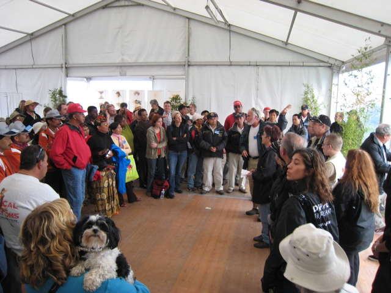
Dieppe, le plus grand festival du monde, 10 jours de cerf-volant, et j'y étais ! On commence par un briefing général et obligatoire à tous les participants

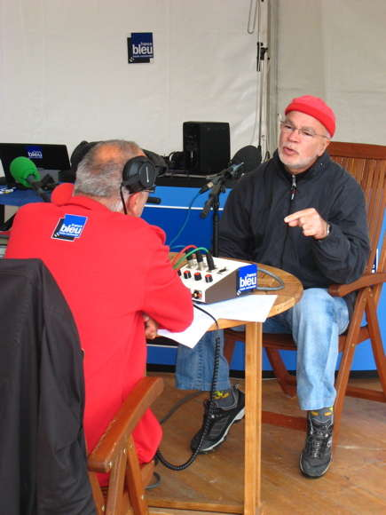
Les vedettes donnent déjà des interviews à la radio...

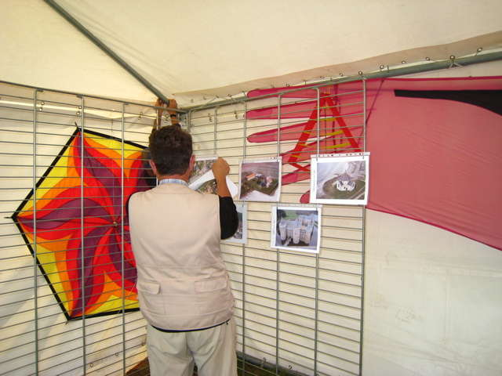
Le CVCF a son barnum et une équipe de 6 : François le Président, Eric, Sylvien, José, Loïk et moi, et moi, et moi... Nous mettons en place le stand, François monte une expo d'éolophotos... (ben oui : aérophotos = pris d'aéronef, alors j'ai inventé...).

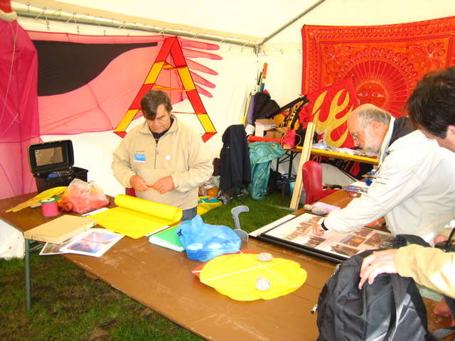
Eric prépare son atelier de coccinelles pour enfants, mais tout le monde y bossera, au contact des enfants ou en préparation pour couper les toiles, les baguettes, les brides... On n'est pas payés à ne rien faire, ça non !

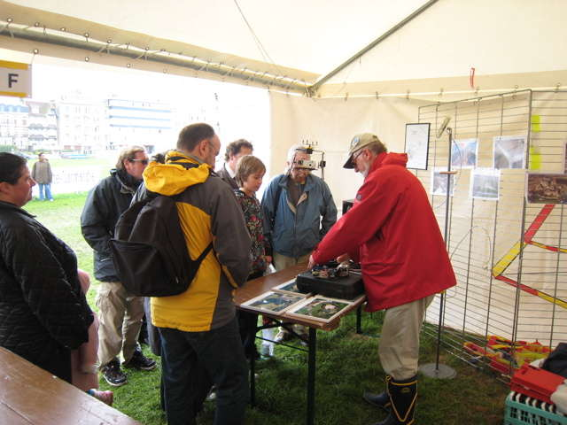
José Wallois monte comme convenu son expo sur la prise de vue sous cerf-volant, avec démo en direct de descente d'image TV du festival sur un moniteur mais on n'aura du courant que... mercredi malgré notre insistance ! Et encore, on a dû aller acheter une rallonge de 50 m !

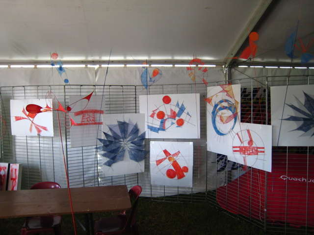
Thérèse a aussi fini de monter son expo. Ses cerfs-volants ont créé un style et fait bien des envieux... et des émules !

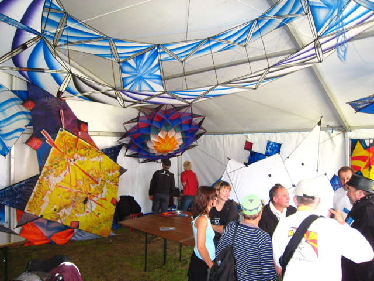
Michel Gressier reçoit au milieu de ses grandes oeuvres : roue, Fibule, Double Square dont un blanc qui sera peint en direct pendant la semaine...

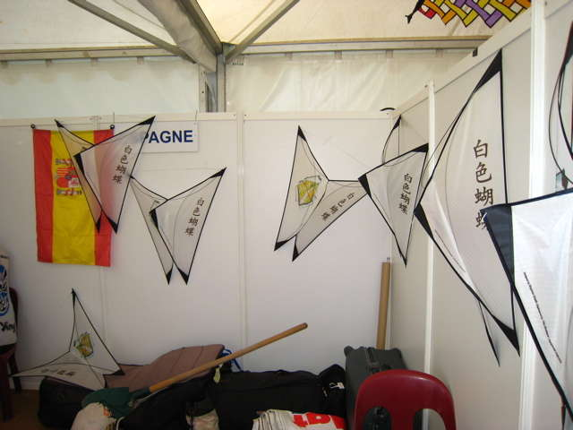
Les Espagnols montrent leurs papillons géométriques, qui supportent tous les vents, et voleront même en indoor...

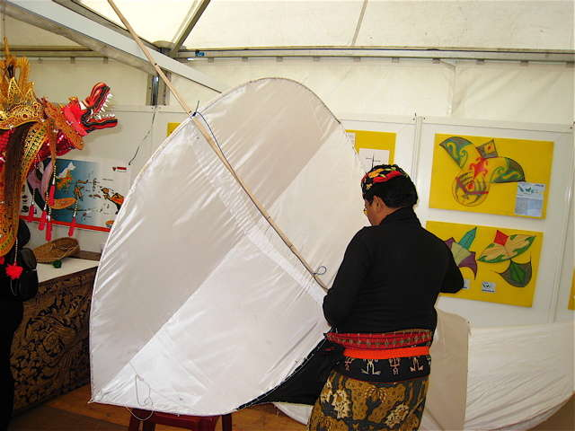
L'Indonésie a un joli stand couvert de cerfs-volants typiques et délicats ! On y prépare aussi quelque chose de plus grand, avec sans doute un arc sonore...

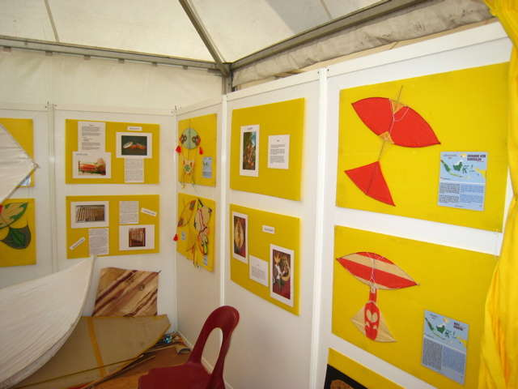
Tout cela témoigne d'une longue tradition et d'un art millénaire dans le travail du bambou et du papier !

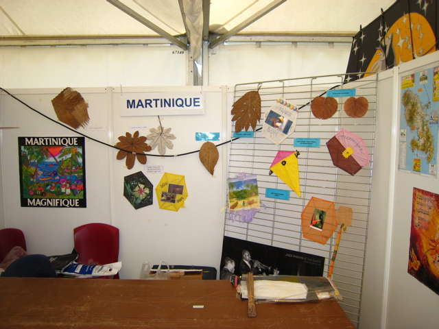
En Martinique, Désiré montre entre autres ses cerfs-volants en une seule feuille d'arbre...

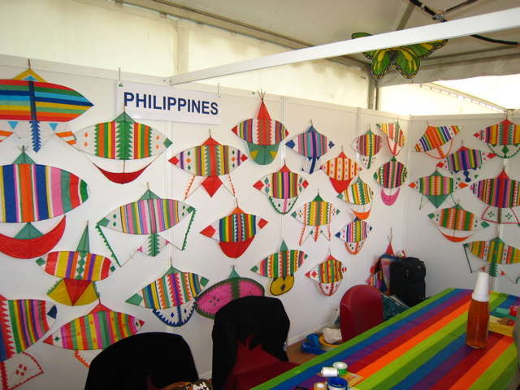
Les Philippines déploient un impressionnant panel de combattants de toutes les formes, très décorés... Il faut dire que parallèlement se déroulent sur l'hippodrome les championnats du Monde de combattants...

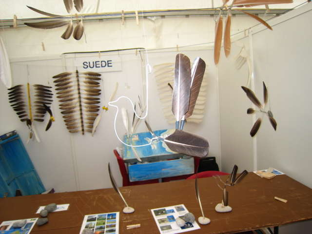
La Suède, comme toujours, montre ses CVs en plumes de grands oiseaux, qui voleront d'ailleurs souvent (les CVs...) !

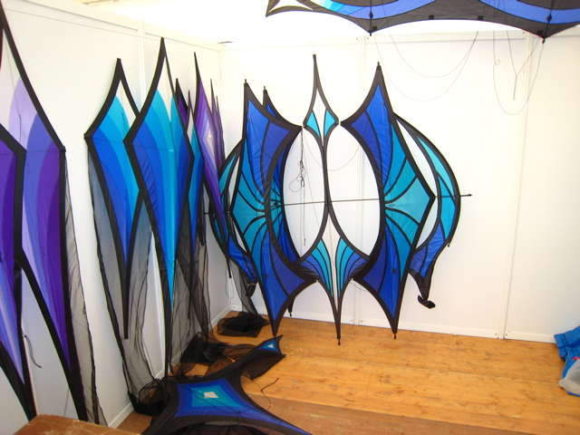
J'aime bien ceux-ci tout en courbes et en dégradés de bleus, australiens, peut-être...

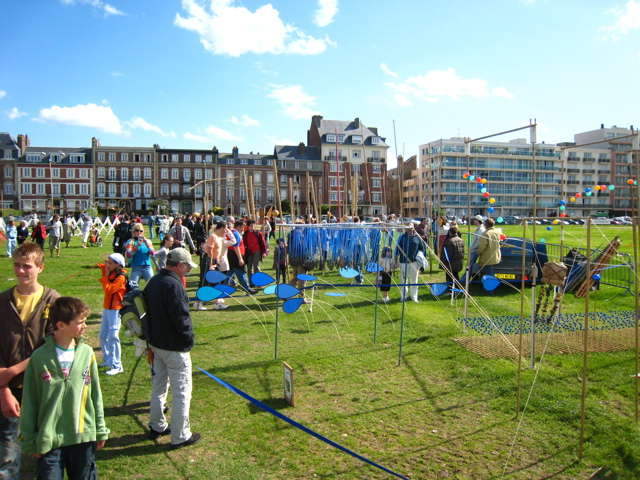
Un petit tour aux Jardins du V..t avec les classiques de Patrick et Annick, les moulinets en CD de François, le jardin de Patricia, les cactus de Fernando, etc.

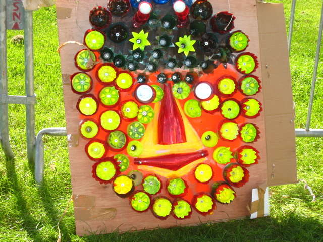
Justement, Fernando a innové avec ce quatre-z-yeux, tout en bouteilles découpées, évidemment. On en reparlera à la fin du festival !

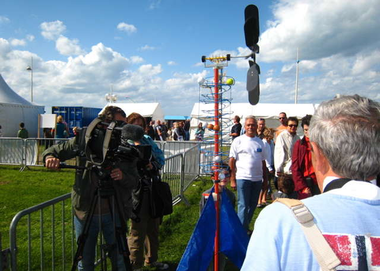
Joël a aussi fabriqué de nouveaux gadgets à chemins de billes ou de balles ! Il fabrique lui-même les machines : cintreuse, soudeuse, pour une exécution nickel des chemins de roulement, mais aussi des vis sans fin et engrenages !

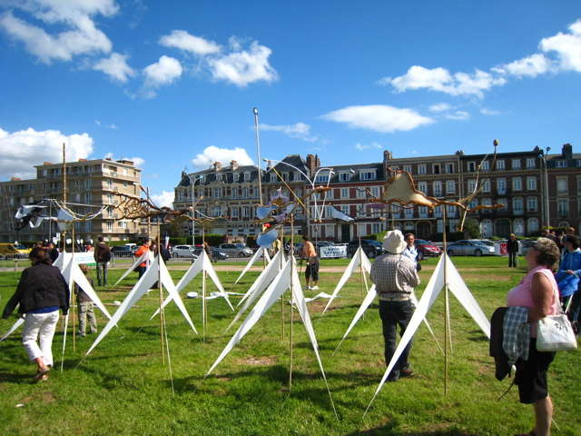
Robert Valkenburg a créé encore de nouvelles girouettes-moulinets de haute tenue, en bois contournés polis et vernis...

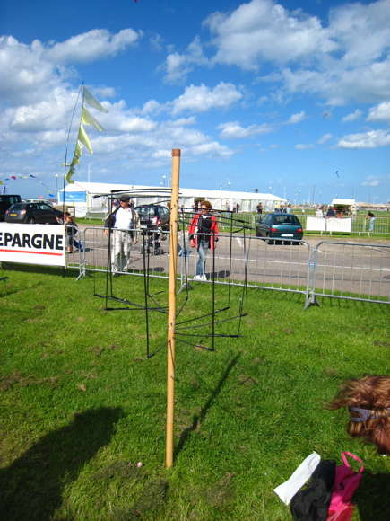
Une petite chose simple mais efficace de CarnetDeVol : des rubans verticaux tendus par des vergues sur un mat unique. Selon l'orientation, le chant varie...

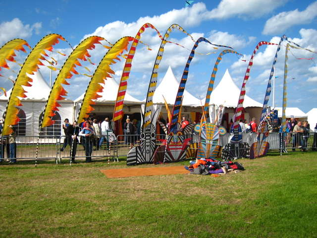
Sur les terrains de vol, Georges Peters est présent et expose ses réalisations magiques en une belle parade...

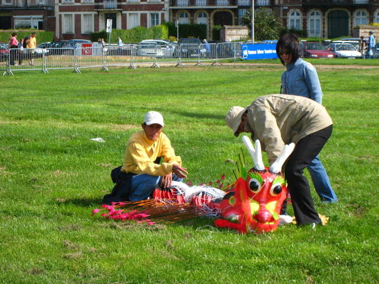
Un beau dragon rouge aux bois de cerf arrive sur le terrain avec ses deux porteurs !

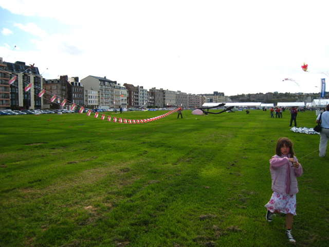
Voilà, tout est démêlé, plus qu'à courir pour le lancement !

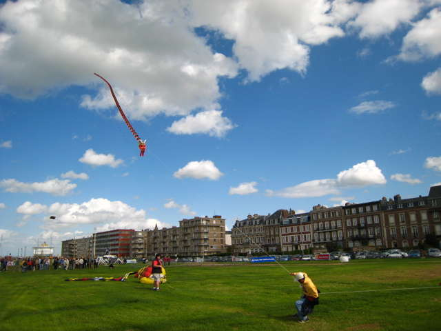
Et c'est parti. Il n'avait pas l'air énorme, mais il tire d'enfer !

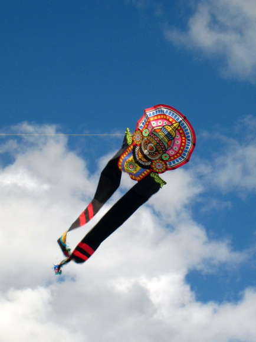
Les indiens de Mangalore ont lancé ce grand cerf-volant.

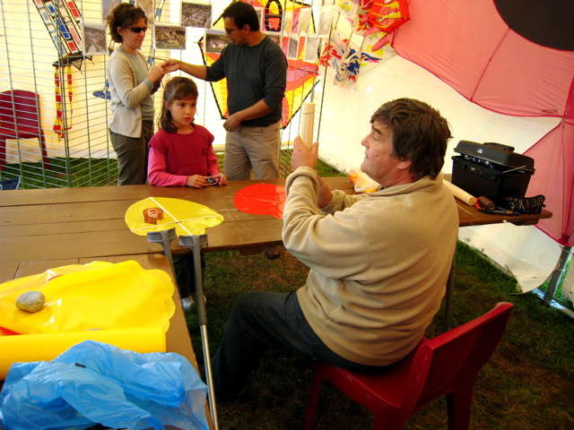
Côté CVCF, Eric a débuté les ateliers cerf-volant pour enfants : des coccinelles très simples, 2 baguettes croisées, un point de bridage, qui volent à la perfection.

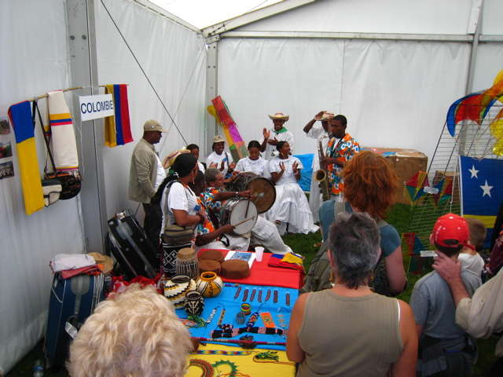
Côté Colombie, on fait des cerfs-volants aussi, mais bien d'autres objets et on joue une musique endiablée. Mais la troupe sera moins présente que les maoris de la dernière édition....

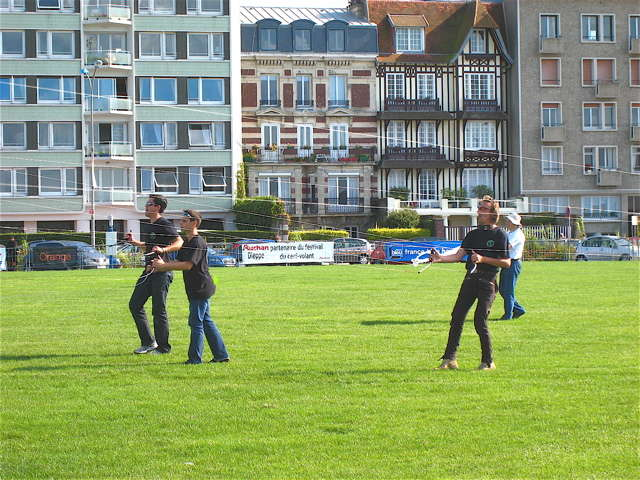
Les Crazy Drivers : Fabrice, Ronan, Damien et Stéph ont pris possession du terrain de démonstration pour un show spectaculaire !

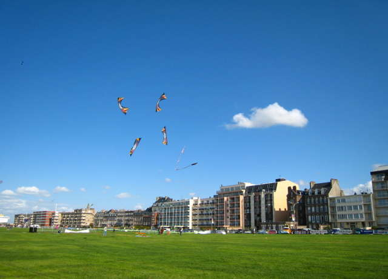
Ils ont une routine qui a l'air assez rodée, alors que souvent, ils se rencontrent et se mettent d'accord 15 mn avant sur ce qu'ils vont faire... La présentation est bien rythmée contrairement à d'autres teams de révos où le tâtonnement est de rigueur...

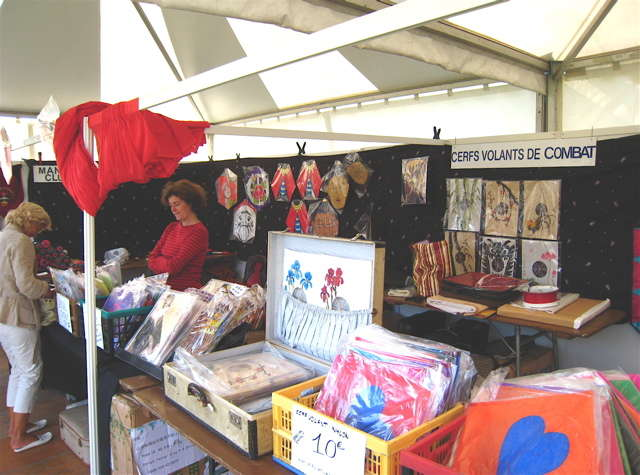
Sur le terrain des pilotables, Ludo et Dom ont monté leurs boutiques surtout orientées combattants...

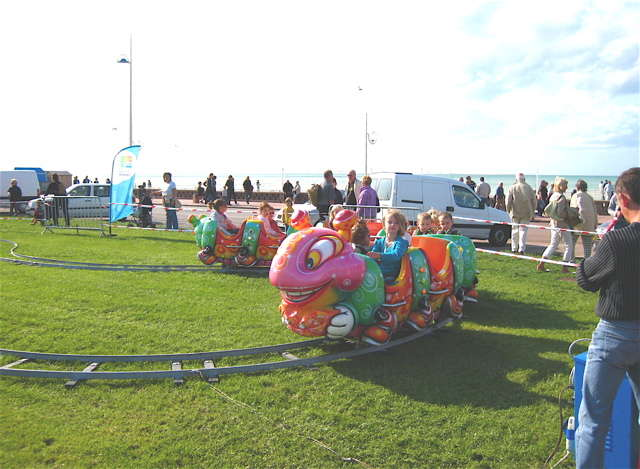
Pour les enfants, il y a d'autres attractions que le cerf-volant, en bordure de la promenade...

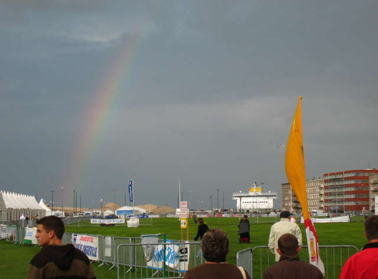
Un grain solide vient de passer et de faire tomber le vent (et abriter les cervolistes), mais c'est bon, dès que le vent tournera, je repartira...

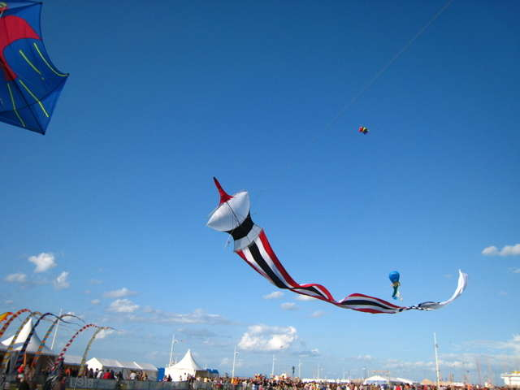
Et voilà, le ciel est clair, le vent a recommencé à turbuler et un imposant Jangang se cherche dans les azurs...

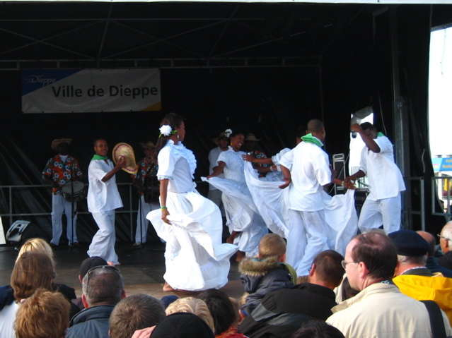
Les Colombiens et les Colombiennes sont sur scène, profitons-en ! Le décor de scène n'est pas trop adapté à leur complexion, on ne voit que les vêtements sur la photo, mais à l'oeil, ça passe bien...

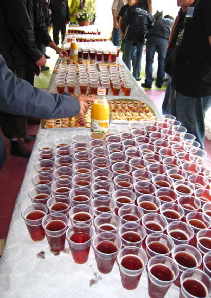
L'Organisation offre un pot bien fourni et bien... organisé. C'est une bonne occasion de rencontrer un tas de cervolistes plus ou moins perdus de vue et de discuter à l'infini !

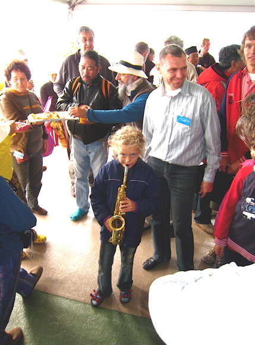
Polina, une charmante petite Ukrainienne, venue avec son papa (qui surveille) et sa maman, nous agrémentera de solos de saxophone. L'instrument est à sa taille, mais elle en joue mieux que beaucoup de pros, avec un talent et un rythme incroyables !

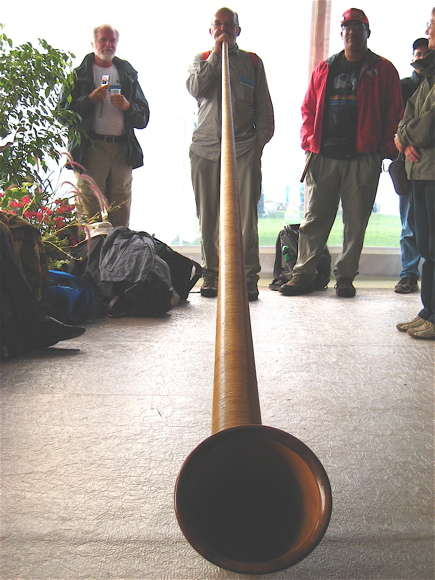
La Suisse nous régalera de concerts de Cor des Alpes, pas très agile mais très prenant !

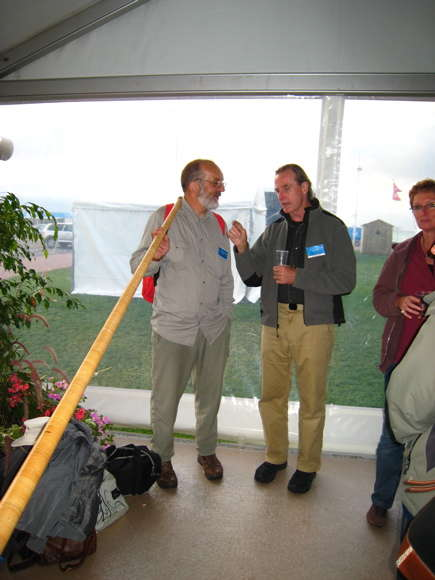
Georges Peters a l'air de s'intéresser à la question, voudrait-il s'y mettre ?

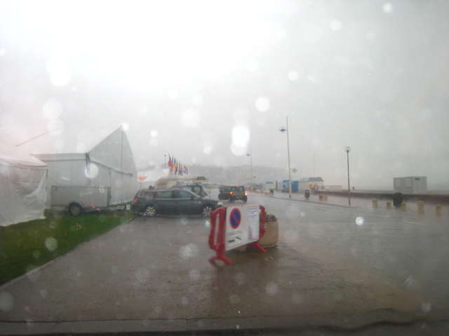
Il n'y a pas eu du soleil tous les jours, bien que je préfère oublier les mauvais moments. Ce matin au réveil, c'est moyen...

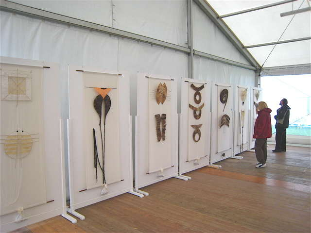
J'en profite pour voir l'expo de Claude Léa Commalonga dans le barnum commun. Ses CVs sont légers comme ceux de Thérèse, mais dans un style bien différent, moins arachnéen...

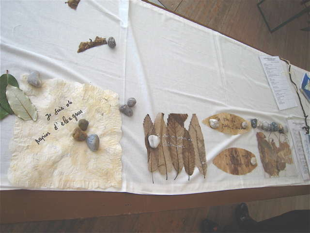
Pour créer ses oeuvres, elle fabrique elle-même des papiers à base de feuilles d'arbres, selon une technique proche de celle du papyrus !

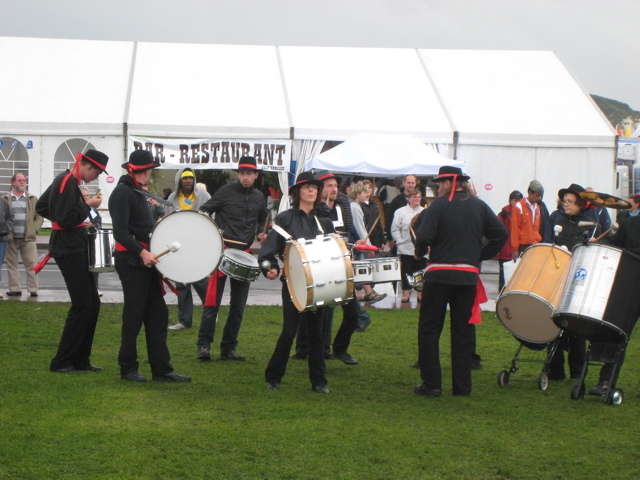
La fanfare des Carcahoux se met en place pour la parade dans les rues de Dieppe. Mais il fait trop mauvais et la parade est reportée à la semaine prochaine ! Les Carcahoux donneront quand même un bon aperçu de leur talent.

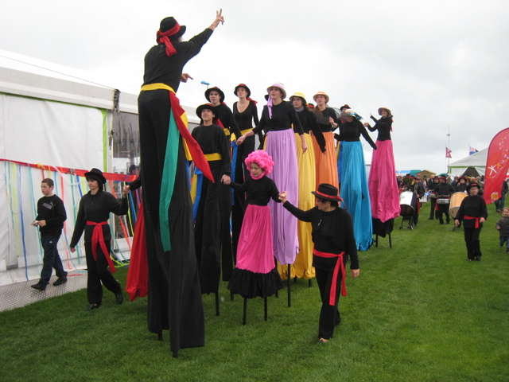
Leurs échassiers se perchent courageusement aussi. Mais les rues sont trop glissantes et tempétueuses, et ils feront des allers-retours sur les pelouses, derrière les barnums qui les abritent un peu de la pluie et des dangereuses rafales !

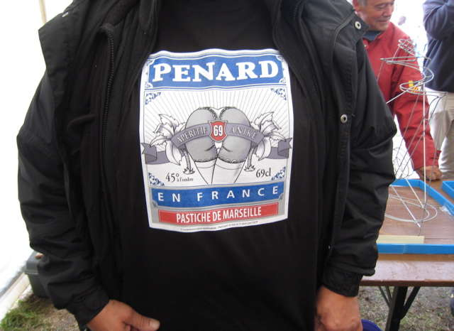
On trouve de tout sur le festival, même des T-shirts de marque connue, ou enfin, presque !

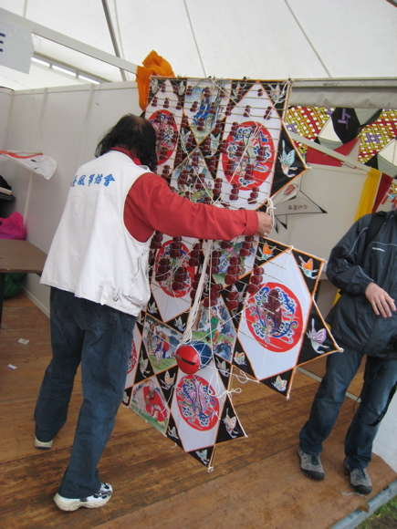
Wang-Zhu-San a réalisé un cerf-volant couvert de sifflets qui sont aussi son oeuvre... Quel travail, mais il faut une armature dense pour porter tout ça ! Pas de problème, de toute façon il faut un bon vent pour que les sifflets sifflent...

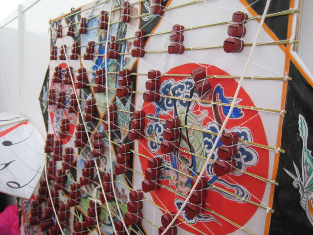
Un détail des sifflets en bambou et bois taillé... Le cerf-volant volera effectivement un moment, avec une grande queue, mais j'étais trop loin pour entendre les sifflets chanter...

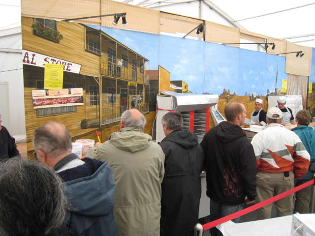
Pause méridienne au restaurant décoré de toiles western. La nourriture était correcte, un peu monotone (tous les jours, midi et soir : crudités ; moules, plat en sauce ou lasagnes ; pâtisserie) pour 10 jours de présence continue !

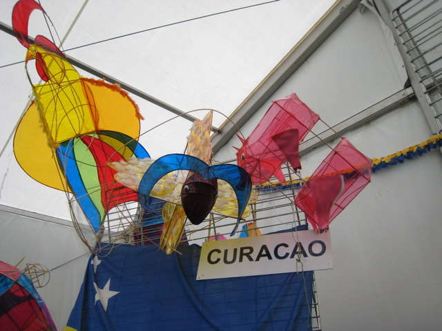
Les natifs de Curacao avaient construit des cerfs-volants originaux, à base de baguettes de bois blanc ligaturées et de cellophanes colorées ! Une bonne inspiration artistique, comme pour ce coq (agrémenté de quelques plumes) ou ce bélier (un peu lainé), et un vol très stable grâce à des cloisons verticales.

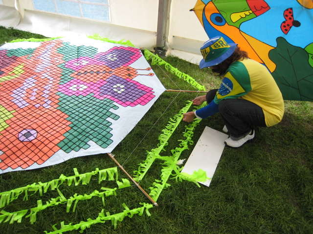
Le Guatemala construit toujours des cerfs-volants plats octogonaux à longue queue, en bambou recouvert de plastique orné de papier collé et entourés de ficelles portant des franges de papier découpé. Ils sont grands, mais loin du 12 m d'il y a quelques années (2000 ?) !

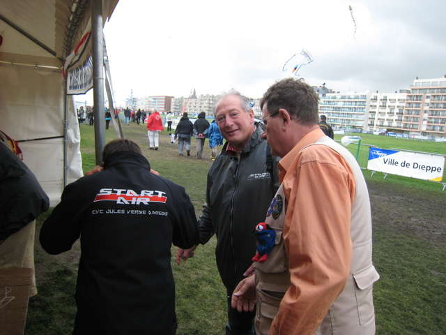
La Fédé est venue à plusieurs reprises mener une offensive de rapprochement avec le CVCF, via le responsable de la branche Cerf-Volant (Hubert Dessaint, voir photo) ou un Délégué Ministériel Détaché auprès de la FFVL mais qui débarque un peu sur le terrain sans connaître les antécédents...

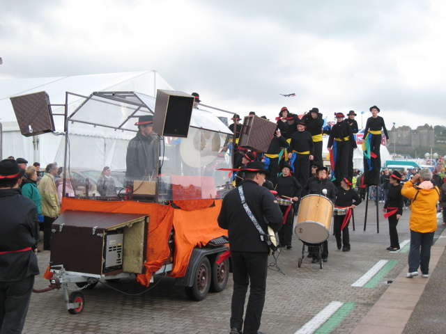
Les Carcahoux ont profité d'une amélioration météo pour un petit défilé sur la promenade ! Méfiants quand même (ils sont du coin...) ils ont une serre musicale transparente, imperméable et mobile abritant les instruments électroniques et la sono, et portant à l'arrière une batterie complète !

Le sol est encore un peu humide, mais les échasses ont des tampons de caoutchouc, heureusement (je vous ai dit qu'ils sont du coin !)...

Les échasses, ce ne sont pas des petits trucs de gamins : chaussures vissées sur les repose-pieds, sangle autour du mollet, on assure, mais ça ne supporte plus le faux-pas...

Les pantalons ont aussi besoin d'une penderie de taille inhabituelle, et là encore, l'échelle est indispensable !

Un grand orchestre s'est même produit, en salle bien sûr, pour assurer, mais j'ai raté le début...

Le beau temps est revenu, place au cerf-volant. Il est même revenu plein pot, et l'hexagone du Guatemala encaisse en souplesse... L'armature n'est pas en bambou, ici, mais en une sorte de grande herbe à paroi mince et pleine de mousse poreuse comme du sureau qui empêche l'écrasement.

Curacao fait voler un de ses cerfs-volants transparents, avec un octogone horizontal et une cloison verticale. Vol sans histoire bien que sans queue pour ce CV original.

Michel Gressier et Jacques ont sorti 2 double-squares dont un inversé et plein de queues, beau spectacle !

Sous un porteur calmar, Taïwan dresse tout un train de plus petits calmars... qui font quand même bien 1,50 m...

Sous un grand requin au ventre blanc, un train, ou plutôt un bouquet de poissons s'agitent en tous sens... Très amusant !

Un flocon qui serait banal, mais celui-là fait 6 m de diamètre... Il lui faut juste son vent, au-dessus il se déforme trop...

Et au-dessus du flocon, test de ma grue, la nouvelle ! C'est son premier vol et elle marche aussi bien que la première, bien que j'aie supprimé un tas de "perfectionnements", me laissant la liberté de les remettre si besoin.

Un carré qui paraît classique, sauf qu'il a deux queues, et qu'il représente... un cervoliste et son cerf-volant (ou peut-être la lune qui sert de cerf-volant ?).

Claude Lebourgeois, bien que très pris par son boulot dans l'organisation, a sorti un des flow-forms dont il a le secret, avec ses queues accordéons !

Les Taïwanais ont aussi créé ce train de petites écolières bien sages... Elles sont rigolotes, bien fixes, mais leurs petits pieds s'agitent constamment !

Voilà au sol le grand flocon de 6 m. Avec l'humidité, il a tendance à se détendre pas mal, ce qui n'est pas bon pour les qualités de vol d'un flocon...

Bon vent de mer, donc assez calme. Sous le Roi des Airs de Bernard, j'ai enfin réussi à réaliser ce pour quoi j'ai travaillé dur jusqu'à la veille de Dieppe : faire voler ensemble mes deux grues... Pour le moment, elles sont chacune sur une ligne, il faudra que je puisse les mettre sur une seule pour voler tranquille...

Amérique du Sud : on nous explique le calendrier aztèque, qui figure sur ce cerf-volant ! Je n'ai pas tout suivi, mais dans chaque rond du tour, il y a une barre pour 5, des ronds pour les unités, et un signe assez carré pour ce qui est concerné (une semaine aztèque, je suppose, qui comprend 13 jours). Donc, tout autour, il y a les chiffres de 1 à 13. Pour plus de détails, voyez l'ambassade aztèque !

La télé est venue sur les lieux avec son car-studio. Elle filmera en particulier le combat de rokkakus, une épopée : on pose les CVs vers 17h45 pour y aller à 18 h comme d'hab. Une fois sur place, on nous dit qu'on volera... à 18h40 ! En fait, on volera un peu avant 19 h... Il faudrait que les organisateurs soient conscients que ça fait une vingtaine de cerfs-volants qui ont disparu plus d'une heure du ciel dieppois ! (c'est d'ailleurs vrai plus généralement pour tous les retards d'horaires comme lors de la remise des prix ou la parade...).

La caméra de TV est elle-même un bidule complexe équipé de diverses antennes. Il faut à peu près une heure pour faire chauffer et régler tout ça en liaison avec le car !

Sur le terrain, profitant d'un vent assez calme, cette grande et belle bâche a été gonflée avec succès !

Sur les pelouses, quelques fanas des cerfs-volants bois et coton avaient étalé leurs réalisations. Celui-ci ressemble vraiment à un précurseur d\'avion...

Si vous croyez que c'est juste un assemblage de barres et de toiles, regardez la forme des nervures à la courbure soigneusement taillée et aux épaisseurs et renforts judicieusement placés...

Le bas du centre est aussi constitué de bois courbés judicieusement pour assurer la tension des toiles et le montage des raccords !

Michel Gressier a bien sûr monté son beau flow-form peint dans son style, avec sa grosse queue tubulaire qui lui assure une stabilité à toute épreuve...

J'ai bien aimé la déco de ce cerf-volant hexagone écologique avec les feuilles qui suivent la ligne générale !

José a laissé tomber ses aéro-appareils-photos pour aller écouter la bonne parole de ces visiteuses en tenue d'été...

Il fait beau, vent de mer, pas d'incidents en vue : les organisateurs de terrain (Marcel, Claude, Roger et les autres...) s'accordent une petite pause à l'ombre...

Une grosse pluie vient de passer et ferme encore tout l'horizon. Plus un cerf-volant en l'air, évidemment car le vent est tombé aussitôt et les CVs avec...

Sur les terrains de l'autre côté de la grand-rue du festival, les pilotables sont infatigables, comme ce joli train à longues queues de trois petits Eddies !

Un matin, un petit vent léger, on sort les cerfs-volants adaptés, comme cet Eddy ou mon Goéland light.

Ces deux perroquets amusants resteront très longtemps en l'air !

Le vent monte peu à peu, et il finit par y avoir pas mal de monde en l'air dont des dragons immenses et bien stables...

Loïk Lamalle (du CVCF...) fait voler ses cerfs-volants très originaux comme son Eddy perpendiculaire (en étagères), son tambourin (2 cercles superposés), sa balise et ce petit dernier composé de 3 cylindres et de deux paires d'ailes...

Kisa et sa soeur ont fait longtemps voler ces cerfs-volants méduses en tulle qui ne souffrent pas trop du vent fort....

Sur les terrains des pilotables, ce beau spectacle offert par 4 trains de 12 petits cerfs-volants dotés de longues queues qui soulignent les trajectoires et emplissent l'espace !

Mangalore remet un grand sujet en vol, à côté de la Balise de Loïk. Cette fois, je sais, c'est Ganesh le dieu éléphant...

Sylvie Perry a lancé un de ses beaux deltas au-dessous du combattant indien énorme (5 m ?) de Gérard Clément !

Ce cerf-volant nouveau et à l'architecture curieuse m'a bien plu aussi...

Mercredi après-midi, indoor à la Maison des Sports. Je traverse Dieppe pour y participer, via la pittoresque Porte des Tourelles, seul reste du rempart qui entourait Dieppe au XV° siècle...

Entraînement cet après-midi pour un spectacle ce soir. Les Derweduwen et Michel se mettent ensemble pour un ballet d'oiseaux... Je ferai voler Bambou Bird, Bi, ma raie Manta, mon Harfang et même Megoel, et tout ça sans canne à pêche...

Je reviens le soir dîner vite fait en coupant par cette église au style composite !

Derrière le stand, ce trike a profité du beau temps pour venir se montrer... Véhicule complexe, qui sait allier les inconvénients de la moto et de la voiture. Seul avantage : ça jette !

Une charmante danseuse vient éclairer les bannières du CVCF de sa souriante et gracieuse présence !

Mais le soleil se couche, il est temps de remonter à la Maison des Sports. Cyril et La Dolle ont mentionné le spectacle indoor de ce soir, il y aura bien un ou deux spectateurs, s'ils ont deviné ce qu'était l'indoor...

Yann montrera son ballet à 2 ou 3 oiseaux, et maniera ce train d'oiseaux, à grande vitesse dans le final...

Lam montrera son talent en Révo, avec un show harmonieux, qui débute en taïchi, et toujours sans faute. Il ne risque cependant pas de figures trop difficiles susceptibles d'amener des ratés !

Un manque d'intérêt des cervolistes ? Des annonces préalables dans les documents mais pas de mention au programme quotidien, pas de signalisation -> voilà le public, plutôt clairsemé. Coordination à améliorer la prochaine fois ?

De ce côté, il y a plus de monde... mais ce sont des indooristes, à part 3 personnes qui ont l'air passionnées par ce qu'elles voient, discutent, posent des questions, essaient... Pourtant pas des jeunes !

Au petit matin, les cervolistes s'unissent en un grand cercle pour adorer le soleil, sous la conduite d'un grand prêtre d'Amérique du Sud en blanc : on se met une pierre sacrée sur la tête en faisant face au soleil, et on la transmet à son voisin...

Je n'ai pas vu de près ce cerf-volant, mais il vole, et les couleurs me plaisent bien...

Les danseuses sud-américaines font un petit spectacle à la porte de la grande tente, sans annonce, sans rien. Mais j'étais là !

Loïk fait voler son "armoire", difficile à garder droite, sous les rokkakus de Hugo et leurs multiples queues.

Le CVCF accueille les participants (pas que du CVCF, tous) pour un pot décontracté dans sa tente !

Après le pot, Eric sort son accordéon pour un peu de musique celtique et autre... avant de déjeuner et de reprendre le collier de l'atelier pour enfants !

Les Colombiens ont aussi réalisé une très belle étoile-flocon à 2x2 couches en 2 couleurs superposées... Splendide et elle se gonfle et vole superbement !

Comme tous les ans, nous allons à la mairie pour la remercier et qu'elle nous remercie. Une bande de joyeux animateurs parlant un semblant de moldo-valaque incompréhensible va semer un bazar incroyable et festif à travers le cortège qui mettra une heure au lieu de 20 mn pour arriver à destination...

En chemin, une Austin 7 est stationnée discrètement !

Chaque membre du big bazar porte des ballons rassemblant les nationalités correspondantes qui seront honorées sur un tapis rouge à chaque arrêt.

Les danseuses suivent le mouvement, mais ça leur a paru un peu bizarre !

Une délégation s'apprête à défiler pendant que du haut de sa tribune (roulante), madame assène un discours incompréhensible...

Au carrefour du Puits Salé, le leader fait un discours du haut de son estrade et deux des dames font semblant de traduire en brodant évidemment...

A la Mairie, le Maire a attendu mais il ne s'est pas plaint ! Il est beaucoup plus jeune et sympa que l'ancien et assure que le festival continuera, c'est ce qu'on a aimé entendre...

Après le discours, les danseuses dansent.

Ensuite, on échange des cadeaux entre la Mairie, les nations et les délégations. Les cadeaux du Maire sont de jolis goélands en bambou et soie réalisés par Wang-Zhu-San. Ils voleront le lendemain mais manquent un peu de dièdre !

Le lendemain midi, une super-pluie s'abat, heureusement pendant que nous déjeunons... Il y aura 15 cm d'eau dans la rue ! Ensuite, ça s'arrange...

Evidemment, après la pluie, le vent est tombé. Le grand calmar des AWITAs est pris dans un réverbère que les architectes s'acharnent à doter de protubérances diverses et accrocheuses... La méthode de décrochage AWITA : on tire dessus jusqu'à ce que ça vienne !

Leurs deltas se sont posés aussi, gentiment et bien proprement sur la plage dieppoise...

Bon, le vent est revenu, alors les deltas sont repartis là où on leur avait dit !

Les Anglais, je crois, ont riposté avec ces cerfs-volants en flammes.

Li-Ruo-Xin a cherché des dérivés de circoflex. Il a réalisé ainsi un très joli coeur, et cette tête de bonne femme au fichu rouge ! Il y a seulement un jonc à l'avant du fichu, comme un circo.

Au bout des pelouses, les Ferries sont tellement monstrueux que, quand ils démarrent, on a l'impression qu'on va se faire écraser...

On commence à voir sortir des cerfs-volants sur le thème musical du concours, comme ce Tralala de Sylvie et Arnold...

Ce monofil scorpion menaçant de Bruno Cocandeau est d'un autre niveau artistique que les homards gonflables, qui ne sont déjà pas mal (pour des gonflables), reconnaissons-le... Et lui vole sans porteur...

Amusante aussi, cette discrète robe noire aux hanches rebondies !

Le train de poissons s'apprête à décoller et nous permet de les admirer de près ! Chacun est splendide et peut être admiré individuellement...

Georges Peters fait voler sa tortue, une de ses dernières oeuvres je crois !

Mon oeil a aussi été attiré de loin par cet assez grand oiseau, mais je n'ai pu m'approcher, retenu par des obligations antérieures...

Georges Peters a fait voler quelques-uns de ses hommes-totems, comme celui-ci, noir et blanc...

Aux JdVs, le jardin des chats d'Emmanuel s'agrandit sans cesse...

Les journées se font belles, avec des vents de mer modérés, et le ciel est de plus en plus chargé de cerfs-volants, avec beaucoup de trains sur les 8 ha de pelouse !

Voilà un beau cerf-volant, avec tout un patchwork de petits morceaux formant un harmonieux ensemble. Il souffre un peu dans un vent fort pour lui, mais reste en l'air sans casser.

José a enfin pu se mettre au courant (...220 V) et peut démontrer les possibilités de sa nacelle photo télécommandée, avec retour vidéo...

Vendredi soir, grand dîner comme d'habitude dans la salle sur les hauteurs de Dieppe... Une fête, mais menu pas supérieur au restau quotidien, et froid !

Pour égayer l'ambiance et attendre les discours, quelques animations comme les Géants du Sud qui se sont d'ailleurs promenés toute la semaine sur le festival...

Nous avons fait aussi un peu d'indoor, moi, avec Manta au-dessus des têtes des convives, Fabrice et plus tard Damien avec les révos blancs !

Discours : le directeur du festival remercie et présente son équipe. A droite, Sandrine salue.

Certains ont amené des cerfs-volants, d'autres des accessoires pittoresques, mais tous ont envie de s'amuser, même s'ils ont l'air hyper-sérieux !

Le ballet Batea a dansé, et a donné des leçons aux autres cervolistes, comme Blandine et Patricia...

Même Lorane a droit à sa leçon particulière, elle a l'air d'apprécier...

Yann pratiquera aussi avec sa fluidité habituelle pas mal d'oiseau-sur-canne-à-pêche dans la place disponible...

Lam refera son show, un peu modifié étant donné l'espace restreint !

Retour dans les bus, à l'heure et pas complets, bravo...

Il a fait tellement humide (pour être gentil) qu'il a fallu répandre de la paille sur la pelouse transformée en bourbier...

La pelouse des terrains, elle, est bien grasse et verte, et il est facile d'y planter des piquets, comme ces arceaux enrubannés...

Une petite curiosité pour les amateurs d'ancien : 3 Gibson Girls qui se tiennent encore ! Ce sont des cerfs-volants pliants, en alu, qui ont servi pendant la guerre aux pilotes abattus sur la Manche, pour signaler leur présence et monter l'antenne de leur émetteur de secours...

Des Rolloplans, en voilà, avec la marque Streiff imprimée sur la toile.

Jeudi après-midi, les projecteurs étaient déjà montés pour le vol de nuit de... samedi !

Les cerfs-volants particuliers de Loïk et sa Tour Eiffel ont tellement plu qu'on en a parlé dans le journal. Pas celui de Claire Chazal, mais la gazette quotidienne du festival...

Gaby est venu, bien sûr, avec son véhicule préféré. Il peut rouler au sec sur la paille sans salir son beau costume...

Un Indien a tenu à essayer la chose...

Gérard Clément a fait voler sa roue avec cette toile dont on voit mieux le motif sur la vignette que sur la grande photo !

Le splendide grand (7 m 50 !) oiseau de Claude Lebourgeois a pris son essor dans une petite brise de mer.

Sur la scène, un autre orchestre, principalement des joueurs de Djembé. Mais aussi de Kora, cette sorte de harpe africaine jouée par les griots.

Dans le barnum sud-américain, les cerfs-volants se multiplient au fil des jours, avec les matériaux et les dessins les plus divers...

Un cerf-volant hexagonal fabriqué avec cette longue bande végétale dont je ne connais pas l'origine (une écorce, peut-être, ou un papier de feuilles de bambou ?) et qui sert aussi à faire les lames d'arc vibrants...

Un handicapé viendra nous rendre visite dans ce véhicule pousse-pousse inhabituel...

Vous aurez bien sûr reconnu le porteur de ce chapeau de soleil asiatique doté de deux haubans pour résister au vent !

Deux Albatros respectant pas mal mon plan viennent d'être construits par des cervolistes de Manneville-La-Goupil, au sud de Fécamp. Ca en fait maintenant 14 à ma connaissance de part le monde !

Peter Lynn, lui, a ramené sa cigogne, déjà vue à Dieppe il y a quelques Dieppades. Envergure : une dizaine de mètres à vue de nez ! Et elle vole, bien que ça lui mette la tête un peu à l'envers !

Il n'a pas peur de la monter, dans un vent assez régulier... Ma grue monte un peu lui tenir compagnie, mais elle ne se mesure pas à elle !

Des trains, on en verra plein, les Taïwanais et les chinois sont très forts là-dessus...

Michel Gressier a fait voler impeccablement sa grande barre (12 m ?), semblable à celle réalisée à Barneville, mais légèrement courbe pour la stabilité, et avec un dégradé de couleurs du vert au violet...

Cette vilaine bête promène dans une cage un malheureux cervoliste assez à l'étroit. J'espère qu'elle le libèrera indemne !

L'atelier de petits cerfs-volants bat son plein. Construire offre des perspectives intéressantes pour les enfants...

L'équipe de Michel a mis en l'air sa grande roue, mais aussi sa Fibule...

Deux petits chiens bien protégés malgré la chaleur ambiante...

Avant le vol de nuit, le CVCF offrait un repas sur le port à tous les CVCFistes de la rencontre ! Plus de 50 présents, et il en manquait !

Le vol de nuit était bien éclairé cette année, des projecteurs fixes commandés et des poursuites puissantes, des césures donnant un rythme au spectacle, le temps beau, et un petit vent de mer sympathique...

Cet oiseau ou poussin spécial est sûrement sorti d'une BD que je ne connais pas. Il est énorme !

A volé aussi ce nounours bleu (superman ?) marqué des armes de Dieppe...

La parade reportée la semaine dernière cause météo se prépare ce matin... Pas facile de s'habiller quand on est Carcahoux !

En route, on passe devant Peter Lynn, l'aiguille à la main, en train de réparer les dommages causés par ces idiots de réverbères qui se jettent sur ses cerfs-volants...

La parade est partie, avec ma bannière CVCF, je suis de belles Indonésiennes en splendides robes colorées !

On passe dans les petites rues étroites de Dieppe pour rejoindre le port qui offre heureusement plus d'espace...

Sur le quai, on peut se redéployer ! Les Carcahoux se réorganisent et occupent l'espace...

Au Puits Salé, une pause orchestre et danse est de rigueur...

Au retour, dans le ciel le bonhomme bien connu de Pierre Fabre plane sur la plage...

Gérard Clément a sorti son vitrail que le soleil met en valeur...

On revoit aussi l'Albatros modifié rouge à plumes noires (ou noir à plumes rouges ?), beau travail de couture en tout cas !

Guillaume Nisin a abandonné son dragon métallique pour ce cerf-volant d'une tout autre inspiration, très stable.

Madame la Cigogne a repris son vol sur la plage, on la croirait au-dessus des tentes !

Cet angelot issu de l'imagination de Marco Casadio vole en fait très bien sans porteur...

Au restaurant du festival, animations: Country-dance au programme avec une maîtresse femme en tête...

Loïk change d'inspiration et a monté sa cathédrale, aussi inhabituelle que les balises, mais qui vole aussi...

Sur la plage, toujours pas mal de gonflables, dont la grande raie orange et noire de Sylvain !

Sur la promenade, beaucoup de monde pour admirer les cerfs-volants et les belles décorations de lampadaires mises en place bénévolement...

La cigogne s'est posée sur la plage pour permettre un déjeuner tranquille à son propriétaire !

Les raccords réalisés sur mesure (fibre de verre enroulée et résine) sont costauds. En fait l'armature semble être constituée de mâts de planches à voiles...

Les Jardiniers du Vent ont trouvé une nouvelle occupation : la confection de sifflets dans une pierre schisteuse à débiter et à creuser... Certains sont simplement faits d'une pâte malléable qui doit sécher.

Uli a installé ses harpes éoliennes perfectionnées avec déviateur et caisse de résonance. Le vent est un peu faible aujourd'hui, le son léger mais harmonieux...

Les aéolistes ont dressé leurs perches à fil résonnant, avec diverses caisses amplificatrices ! En bois, elles sont plus résistantes, mais la façade de l'une d'elles a quand même été retrouvée cassée lors du rangement !

Georges Peters a mis un peu de monde en l'air, comme ce magnifique coléoptère (cétoine ?) rayé, plus beau que nature...

Ce crocodile (ou plutôt iguane) doit être aussi de sa patte !

Mais ce totem insecte-homme très coloré est vraiment inoubliable...

J'ai bien aimé encore ce banc de poissons de récif qui ondulent mollement sans cesse les uns contre les autres...

Au sol, on peut encore admirer cette réalisation bois-coton d'une espèce de Saconney triplan à ailerons plus larges que les cellules...

J'ai pris ce cellulaire de Mikael Alvarez au sol pour que vous puissiez constater la rigueur de son travail !

La distribution des prix approche. Le groupe Batea danse et pose pour des photos...

Ce jeune garçon a remporté le prix Junior du concours de création avec son cerf-volant "Maracas".

Le sympathique Australien est aussi honoré pour son Rokkaku... Je n'ai pas les classements exacts, le site de Dieppe les donnera sans doute.

Olivier Reymond a eu le premier prix pour "Tais-toi et écoute", un Faga en appliqué (surprise !)...

Joël a eu aussi un prix je ne sais plus pour quoi (pour ses manèges de billes ou de balles des jardins du v..t ?), mais il le mérite bien !

Sylvien monte ensuite sur scène pour remettre les prix Coup de Coeur du CVCF !

Dans la catégorie JdV, c'est Fernando Guzman qui a gagné avec son masque Quatre-z-yeux (voir l'image au début du reportage). C'est Bernadette qui lui remet la coupe...

Patrice Peigné l'emporte pour l'ensemble de ses petits cerfs-volants et en particulier celui-ci, qui comporte, on ne les voit pas ici, une dizaine de brins centraux qui vont jusqu'au sol...

Pendant ce temps, les cerfs-volants ont continué de voler, comme ces 2 beaux Eddies ou le grand circolong blanc comme celui de Jules...

Parmi les classiques, ce bateau a particulièrement bien et longtemps volé, ce n'est pas toujours le cas...

Le CV d'Olivier peut voler, ce n'est pas seulement une oeuvre d'art statique, la preuve !

En clôture, six cerfs-volants ont levé ces immenses flammes assorties dans le ciel qui s'est progressivement dégarni.

Avant de se quitter, François remet à Loïk pour l'ensemble de son oeuvre et son dévouement au cerf-volant (il ouvrait le stand à 7 h 30 et volait à 8 h 00 !) une des mouettes reçues de la main du Maire...
Dieppe : Après un début à la météo un peu chaotique, la fin a été splendide. L'organisation a été nickel, sauf pour l'indoor dont j'ai parlé. Un grand merci à tous les bénévoles et aux autres, à dans 2 ans !